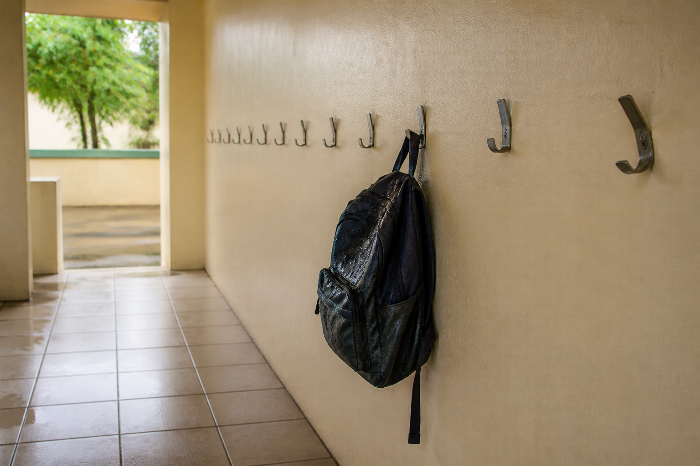

Ta mission : utiliser une simulation fournie pour dire si un matériau tiendra, avant de casser quoi que ce soit.
🖥️ Ordinateur partagé (salle de techno, CDI) : un autre élève qui ouvre cette page sur la même session verra tes réponses.
Quand tu as fini : imprime en PDF si tu veux garder une trace, puis clique sur « 🗑 Effacer ma sauvegarde ».
| Code | Formulation officielle (programme 2024) | Où, dans cette séquence |
|---|---|---|
| 5e_C8.1 | Utiliser une simulation fournie pour valider la tenue mécanique d’un matériau. | Activités 1, 2 et 3 |
| 5e_C3.1 (appui) | Repérer pour un OST les matériaux, les sources et les formes d'énergies, le traitement de l'information. | Activité 4 |
Le verbe est « utiliser ». La simulation t'est donnée réglée, juste, et complète. Ce qu'on te demande, c'est de savoir ce qu'elle répond — et à quelle question.
Référence normative : programme de technologie du cycle 4, BO n°9 du 29 février 2024. Codification opérationnelle : les codes 5e_C3.1 · 5e_C8.1 servent à ranger les séquences ; ils ne viennent pas du programme officiel.
Pour toi, sans note : coche ce qui est déjà en place. Sous chaque ligne, un lien pour le reprendre si tu n'en es pas sûr·e.
→ pas encore sûr·e ? relis « Comment suivre un protocole fourni ? » dans la synthèse 5e_C8.2 — c'est la séquence 5e_C8.2 qui la travaille, si tu l'as suivie
→ pas encore sûr·e ? relis « Que mesure-t-on en cassant une éprouvette ? » dans la synthèse 5e_C8.2 — c'est la séquence 5e_C8.2 qui la travaille, si tu l'as suivie
→ pas encore sûr·e ? relis « Le matériau tient-il la charge exigée ? » dans la synthèse 5e_C8.2 — c'est la séquence 5e_C8.2 qui la travaille, si tu l'as suivie
Dans cette séquence : tu ne casses rien. Un service technique t'envoie une simulation déjà réglée, et tu t'en sers pour décider. Le verbe du programme est « utiliser » — pas « écrire », pas « régler ».
Un mot à garder en tête : une contrainte, c'est l'effort que la charge fait subir à l'intérieur de la matière ; elle dépend de la charge et de la forme, jamais du matériau.
Le gestionnaire relit son propre courrier de l'an dernier : « un sac de cours trempé, accroché d'un coup sec, et le crochet plie ».
« Vos essais m'ont donné la charge à laquelle chaque crochet casse. Mais aucun de mes crochets n'a cassé. Ils ont plié, et une patère tordue, je dois quand même la remplacer. Est-ce que votre laboratoire sait me dire à partir de quand ça plie ? »
Le service technique de la mairie répond en envoyant un fichier : une simulation (un programme qui calcule ce qui se passerait, sans rien casser) du crochet, déjà réglée sur sa forme exacte.

Comment savoir, sans rien casser, à partir de quelle charge un crochet se déforme pour toujours ?
Au banc, le bois a tenu 41 kg avant de casser — plus de trois fois le poids d'un sac trempé. D'après toi, est-ce que cela suffit à dire « le bois convient » ? Écris ta réponse : personne ne la corrige, elle sert à mesurer le chemin parcouru.
Un cahier des charges, c'est la liste de ce que l'objet doit faire et respecter, chaque exigence avec une valeur qu'on peut vérifier (au moins…, au plus…). Celui du gestionnaire :
Une question par ligne du bloc « Avant de commencer ». Elles ne sont pas notées et ne comptent pas dans ta progression : elles te disent quoi relire avant de te lancer. « Je ne sais pas encore » est une réponse utile.
Il calcule la contrainte de flexion dans le bras du crochet, et la compare à la limite élastique du matériau — la valeur au-delà de laquelle le crochet reste tordu même une fois le sac enlevé. Tu ne le programmes pas : tu l'utilises.
contrainte : — · limite élastique : —
coefficient de sécurité : — (exigé : 3)
—
| Matériau | σ sous 12 kg | limite élastique | coefficient | décision |
|---|---|---|---|---|
| Aucun essai reporté pour l'instant. | ||||
essais reportés : 0 · retenus : 0
Question directrice : que calcule le simulateur, et qu'est-ce qui change vraiment d'un matériau à l'autre ?
Au programme : l'ouverture, puis prendre le simulateur en main (activité 1, environ 15 min) et y passer les cinq matériaux (activité 2, environ 20 min). Avec l'ouverture, la séance tient dans 55 min.
Objectif : lire ce que le simulateur affiche. Production : trois réponses justes. Ressource : le simulateur, plus haut.
Regarde la formule affichée sous le simulateur : σ = charge × g × longueur du bras ÷ module de la forme. Cherche où le nom du matériau apparaît dans cette formule.
Il n'y apparaît pas. Ce qui change d'un matériau à l'autre, c'est la limite à laquelle on compare — pas la contrainte elle-même.
Le bras du crochet mesure 60 mm, sa section 25 × 12 mm, donc son module de flexion vaut 600 mm³. Sous 12 kg :
σ = 12 × 9.81 × 60 ÷ 600 = 11,8 MPa
Aucun des trois nombres de cette formule ne parle du matériau. La contrainte est la même pour les cinq : 11,8 MPa. Ce qui les distingue, c'est leur limite élastique : 25 MPa pour le bois, 235 MPa pour l'acier doux.
Objectif : classer les cinq matériaux. Production : le tableau du simulateur rempli. Ressource : le simulateur, plus haut.
Reviens au simulateur. Pour chacun des cinq matériaux, à 12 kg, clique ＋ Reporter dans le tableau. Le tableau se remplit tout seul ; il ne se remplit que si tu le fais.
La contrainte de service est la même pour tous : 11,8 MPa (mégapascals). Le coefficient, lui, est le rapport limite élastique ÷ contrainte :
| Matériau | Limite élastique (en mégapascals) | Coefficient | Décision |
|---|---|---|---|
| Bois (pin) | 25 MPa | 2,1 | écarté |
| PLA imprimé en 3D | 45 MPa | 3,8 | retenu |
| PVC rigide | 45 MPa | 3,8 | retenu |
| Aluminium | 140 MPa | 11,9 | retenu |
| Acier doux | 235 MPa | 20,0 | retenu |
Le bois plie définitivement dès 25 kg. Deux sacs trempés accrochés au même crochet suffisent.
Question directrice : pourquoi le banc et la simulation ne classent-ils pas les matériaux pareil, et lequel choisir pour les 40 patères ?
Au programme : le banc ne disait pas la même chose (activité 3, environ 20 min), choisir et signer l'avis (activité 4, environ 20 min), le réinvestissement (environ 10 min), puis la synthèse, le Bonus, le bilan et le renvoi vers le QCM.
Objectif : comprendre pourquoi deux instruments justes se contredisent. Production : trois réponses justes. Ressource : tes relevés de 5e_C8.2.
| Matériau | Charge de rupture relevée au banc | Coefficient sur la rupture | Décision du banc |
|---|---|---|---|
| Bois (pin) | 41 kg | 3,4 | retenu |
| PLA imprimé en 3D | 51 kg | 4,2 | retenu |
| PVC rigide | 53 kg | 4,4 | retenu |
| Aluminium | 194 kg | 16,1 | retenu |
| Acier doux | 408 kg | 34,0 | retenu |
Les deux instruments sont justes. Ils répondent à deux questions différentes :
Pour le bois, la première réponse est 41 kg (coefficient 3,4, donc « retenu ») et la seconde 25 kg (coefficient 2,1, donc « écarté »). C'est la seconde qui correspond à la panne décrite par le gestionnaire : ses crochets n'ont pas cassé, ils ont plié.
PLA et PVC ont exactement la même limite élastique (45 MPa). L'écart de deux kilogrammes mesuré au banc porte sur la rupture, pas sur la déformation : il ne permet de classer ni l'un ni l'autre pour cet usage.
Objectif : transformer un classement en décision. Production : un matériau choisi et une réserve écrite. Ressource : le tableau ci-dessous.
| Matériau retenu | Coût des 40 patères | Temps d'atelier | Réserve |
|---|---|---|---|
| PLA imprimé en 3D | 24.00 € | 30,0 h | Insensible à l'eau, mais ramollit vers 55 °C — pas au soleil direct. |
| PVC rigide | 84.00 € | 6,7 h | Insensible à l'eau. Devient cassant après quelques années de UV. |
| Aluminium | 192.00 € | 10,0 h | Ne rouille pas : sa couche d'oxyde le protège toute seule. |
| Acier doux | 220.00 € | 10,0 h | Rouille dans un hall humide s'il n'est pas galvanisé (+ 1,60 €). |
Rappel du cahier des charges : l'atelier dispose de 8 heures de machine avant la rentrée.
Le PLA imprimé en 3D est le moins cher (24 € pour les 40), et c'est justement lui qui est impossible : 30 heures d'impression pour 8 heures disponibles. Un prix qui ne tient pas dans le temps disponible n'est pas un prix, c'est un projet pour l'an prochain.
L'aluminium demande 10 h — encore trop. L'acier doux rouillerait dans un hall où entre la pluie de midi.
Reste le PVC rigide : 84 €, 6,7 h d'atelier, insensible à l'eau. Sa réserve — il devient cassant sous les ultraviolets — ne s'applique pas dans un hall couvert. On l'écrit quand même : la réserve suit le matériau, pas l'humeur du jour.
La salle de techno veut une étagère murale : même principe, bras de 200 mm au lieu de 60 mm, charge prévue 25 kg.
σ = charge × g × longueur ÷ module. La charge passe de 12 à 25 kg (elle double environ) et le bras de 60 à 200 mm (il triple environ) : la contrainte est multipliée par plus de six, à section égale. C'est pour cela qu'une étagère se fixe avec des équerres — pour raccourcir le bras.
Dans le simulateur, changer de matériau ne change que la limite élastique et, par conséquent, le coefficient. La contrainte, elle, ne bouge pas.
Le crochet deviendrait bien plus raide et deux fois plus résistant. Le module de flexion d'un bras rectangulaire vaut largeur × épaisseur × épaisseur ÷ 6, l'épaisseur étant la dimension dans le sens où le sac tire. L'épaisseur compte donc deux fois, la largeur une seule.
Le calcul : aujourd'hui, 25 × 12 × 12 ÷ 6 = 600 mm³ ; dans l'autre sens, 12 × 25 × 25 ÷ 6 = 1 250 mm³, un peu plus du double. Avec la formule du simulateur, σ = charge × g × longueur du bras ÷ module : 12 × 9,81 × 60 ÷ 1 250 ≈ 5,65 MPa (mégapascals), au lieu de 11,8. Le coefficient du bois (limite élastique 25 MPa) devient 25 ÷ 5,65 ≈ 4,4 : plus que les 3 exigés, il serait retenu.
Attendus : la même matière et la même quantité de matière (300 mm² de section dans les deux cas) ; seule l'orientation change ; plus d'épaisseur dans le sens de la charge, moins de contrainte. C'est pour cela qu'une règle plate plie facilement à plat et presque pas sur la tranche.
Erreurs typiques : « ça ne change rien, c'est la même section » ; « c'est quatre fois mieux » — on oublie que la largeur diminue aussi ; « le bois devient plus solide » — sa limite élastique ne change pas, c'est la contrainte qui baisse. Et le simulateur fourni ne permet pas de changer la forme : il faudrait le demander au service technique.
Exemples qui conviennent : une cuillère ou une fourchette tordue, un cintre en fil de fer, un trombone ouvert, une agrafe, un crochet de serviette penché.
Où était la contrainte maximale : là où le pli est resté. C'est l'endroit le plus loin de la charge, au bout du bras de levier : le pied du crochet contre le mur, le col de la cuillère près du manche. Seul cet endroit a dépassé la limite élastique ; le reste de l'objet est resté droit.
Attendus : un objet en métal ; une déformation qui ne revient pas ; un endroit précis désigné sur la photo (ou sur un dessin, si tu ne peux pas photographier) ; une phrase qui parle de limite élastique.
Erreurs typiques : montrer le bout de l'objet, là où l'on a appuyé — la contrainte y est presque nulle ; choisir un objet cassé (c'est la rupture, pas la déformation permanente) ; choisir un plastique souple qui se redresse tout seul (il est resté élastique).
Pour la contrainte, presque rien. Le bras seul fait 60 × 25 × 12 = 18 000 mm³, soit 18 cm³ (centimètres cubes). Masse = volume × masse volumique : 18 × 7,85 ≈ 141 g en acier, 18 × 2,7 ≈ 49 g en aluminium, 18 × 1,4 ≈ 25 g en PVC (masses volumiques usuelles, en grammes par centimètre cube). Même en acier, c'est 141 g ÷ 12 000 g ≈ 1 % d'un sac de 12 kg : le simulateur a raison de l'ignorer.
Pour le reste, beaucoup : 40 crochets en acier, c'est 40 × 141 g ≈ 5,6 kg de bras à visser au mur ; chaque vis et chaque cheville porte le crochet en plus du sac ; et un crochet fixé en hauteur qui se détache tombe sur quelqu'un — plus il est lourd, plus c'est dangereux.
Attendus : au moins deux raisons parmi : la tenue des fixations au mur, la sécurité en cas de chute, le transport et la pose, le coût.
Erreurs typiques : « plus lourd veut dire plus solide » ; « la masse du crochet change la contrainte calculée » — elle est négligeable devant le sac ; oublier les fixations : le crochet peut tenir et la vis lâcher.
Ton hypothèse du début : —
Le bois tenait 41 kg au banc. Avec ce que tu sais maintenant, dirais-tu encore que cela suffit ?
Comment j'ai travaillé :
Les quatre niveaux sont ceux du livret scolaire :
maîtrise insuffisante · maîtrise fragile · maîtrise satisfaisante · très bonne maîtrise.
Aucun n'est une note : choisis celui qui décrit ce que tu fais aujourd'hui.
30 questions sur cette séquence, dont 4 illustrées. Tu peux la refaire autant de fois que tu veux : tes réponses sont gardées dans ce navigateur.
▶ Ouvrir le QCM (30 questions)